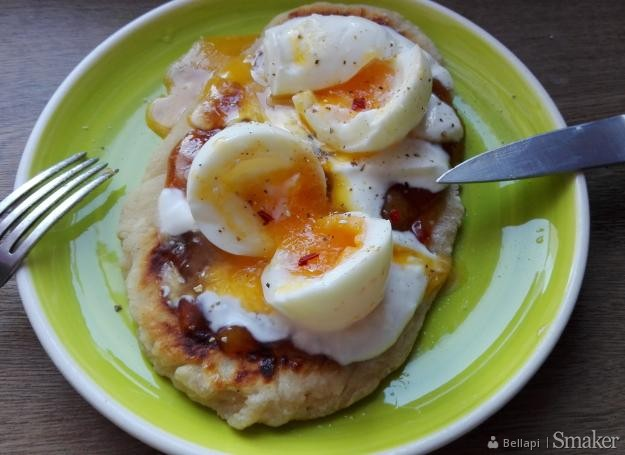

Podpłomyki z jajkiem i mangowym chutney

email me here!
Recipe:
- Gotuj jajka przez 5.5 minut w bulgoczącej wodzie (na miękko).
- W misce wymieszaj mąkę ze szczyptą soli morskiej, 4 łyżkami jogurtu i 1 łyżką oliwy.
- Podziel ciasto na pół i każdą część rozwałkuj na grubość ok. 0.5 cm.
- Smaż podpłomyki z obu stron do przyrumienia około 3 min.
- Na podpłomyki nałóż kleksy chutney i jogurtu.
- Przekrój jajka i ułóż je na wierzchu (możesz rozgnieść je widelcem).
- Pokrój chili w plasterki i posyp całość dowolną ilością. Skrop całość oliwą i oprósz solą morską i czarnym pieprzem.